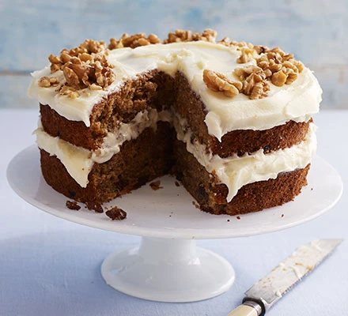

Carrot Cake

Ingredients
- Carrots
- Raisins
- Brown sugar
- Flour
- Icing sugar
- Cream cheese
Directions
- Heat the oven to 180C/160C fan/gas 4. Oil and line the base and sides of two 20cm cake tins with baking parchment. Whisk the oil, yogurt, eggs, vanilla and zest in a jug. Mix the flour, sugar, cinnamon and nutmeg with a good pinch of salt in a bowl. Squeeze any lumps of sugar through your fingers, shaking the bowl a few times to bring the lumps to the surface.
- Add the wet ingredients to the dry, along with the carrots, raisins and half the nuts, if using. Mix well to combine, then divide between the tins.
- Bake for 25-30 mins or until a skewer inserted into the centre of the cake comes out clean. If any wet mixture clings to the skewer, return to the oven for 5 mins, then check again. Leave to cool in the tins.
Back